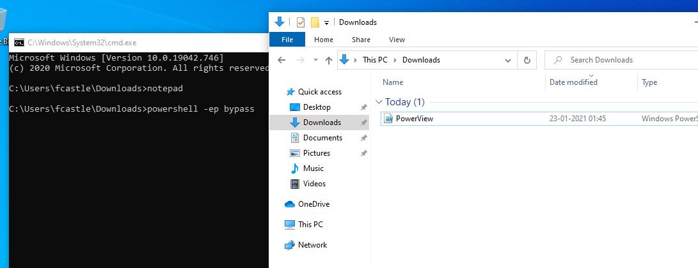

the thing is u install this on one of ur windows machine actuakly in a rela life scenario u would ge t a shell and using that u would access powershell and then would run
ppwerview for there
bt we are running driectly from machine itslef to get auto tab feature accomplished


ep stands for execution poilicy
ep isnt for securty purposes
its there so that u dont randomly just exectue scripts
. \PowerView.ps1
ran above command nothing happens just it executes

https://gist.github.com/HarmJ0y/184f9822b195c52dd50c379ed3117993
use this site for a cheatsheet

this is quite basic dc hence cannot find out much information so in a complex dc this would help us
to get to know whcich DC are there type following

some networks have multiple DC's so there it could help also from here u get to know ip address of the DC

thus we kjnow minimum password lenght is 7 so u can now spray password of lenght 7


thus can get such creamy infot too

this would just pull down all the usernames and users

could also look atuseraccountcontrol
lastlogon
badpwdcount and other stuff too


to see when passwd was last set

this helps to idetify honeypod accounts
like the acc whcih have no lognis yet maybe there as a trap so that once u login it alerts the system and catches u

this helps to know if some has more badpwdcount adminstrator can get to know which was attacked mych more


so its hell lot of fata


to get all memebers in a group

through below tool can find all smb shares in a network and which files are being shared and where are they being shared


thus we can get imp information out of this too


thus this is also useful